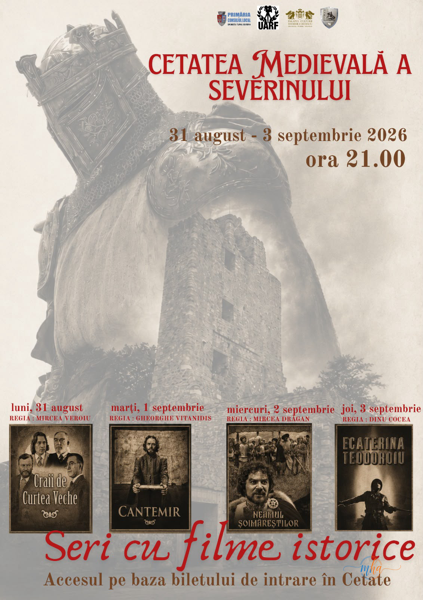

Filme românești, filme pentru copii și seri de cinema la Drobeta-Turnu Severin. Programul complet al proiecțiilor
Drobeta-Turnu Severin se pregătește pentru o serie de seri dedicate cinematografiei românești, în perioada 24 august – 3 septembrie 2026. Publicul va putea urmări filme românești, producții îndrăgite de copii și filme istorice, în trei spații diferite: Palatul Culturii Teodor Costescu – Sala Grigore Cerchez, Grădina de Vară Geo Saizescu și Cetatea Medievală a Severinului.
Programul cuprinde 12 proiecții cinematografice, adresate atât publicului adult, cât și copiilor și familiilor.
Festivalul Film Românesc – 24-27 august
În perioada 24-27 august, la Grădina de Vară Geo Saizescu, cinefilii sunt invitați la Festivalul Film Românesc. Proiecțiile încep în fiecare seară la ora 21:00.
### Program Festivalul Film Românesc:
Luni, 24 august – ora 21:00 🎬 „Viața unei singure femei” Regia: Ioan Cărmăzan Locația: Grădina de Vară Geo Saizescu
Marți, 25 august – ora 21:00 🎬 „Astă seară dansăm în familie” Regia: Geo Saizescu Locația: Grădina de Vară Geo Saizescu
Miercuri, 26 august – ora 21:00 🎬 „Brâncuși” Regia: Cornel Mihalache Locația: Grădina de Vară Geo Saizescu
Joi, 27 august – ora 21:00 🎬 „Duios Anastasia trecea” Regia: Alexandru Tatos Locația: Grădina de Vară Geo Saizescu
Programul oficial indică aceste patru proiecții pentru perioada 24-27 august, toate la ora 21:00.
Filme pentru copii – 24-27 august
În aceeași perioadă, cei mici sunt invitați la Palatul Culturii Teodor Costescu – Sala Grigore Cerchez, unde vor fi proiectate patru filme pentru copii.
Proiecțiile încep în fiecare seară la ora 19:00, iar afișul anunță intrare gratuită, în limita locurilor disponibile.
### Program filme pentru copii:
Luni, 24 august – ora 19:00 🎬 „Maria Mirabela” Regia: Ion Popescu-Gopo
Marți, 25 august – ora 19:00 🎬 „Maria Mirabela în Tranzistoria” Regia: Ion Popescu-Gopo
Miercuri, 26 august – ora 19:00 🎬 „Zâmbet de soare” Regia: Elisabeta Bostan
Joi, 27 august – ora 19:00 🎬 „Un saltimbanc la Polul Nord” Regia: Elisabeta Bostan
Programul transmis confirmă cele patru proiecții pentru copii, desfășurate la Sala Cerchez, începând cu ora 19:00.
Seri cu filme istorice la Cetatea Medievală a Severinului
Cinematografia românească ajunge apoi într-un decor spectaculos. În perioada 31 august – 3 septembrie, la Cetatea Medievală a Severinului, vor avea loc patru seri dedicate filmelor istorice.
Proiecțiile sunt programate de la ora 21:00.
### Programul filmelor istorice:
Luni, 31 august – ora 21:00 🎬 „Craii de Curtea Veche” Locația: Cetatea Medievală
Marți, 1 septembrie – ora 21:00 🎬 „Cantemir” Locația: Cetatea Medievală
Miercuri, 2 septembrie – ora 21:00 🎬 „Neamul Șoimăreștilor” Locația: Cetatea Medievală
Joi, 3 septembrie – ora 21:00 🎬 „Ecaterina Teodoroiu” Locația: Cetatea Medievală
Aceste patru proiecții sunt programate la Cetatea Medievală a Severinului, în fiecare seară de la ora 21:00.
PROGRAM COMPLET – 24 AUGUST – 3 SEPTEMBRIE 2026
| Data | Ora | Film | Locația | | ------------ | ----: | ------------------------------ | ----------------- | | 24 august | 19:00 | Maria Mirabela | Sala Cerchez | | 24 august | 21:00 | Viața unei singure femei | Grădina de Vară | | 25 august | 19:00 | Maria Mirabela în Tranzistoria | Sala Cerchez | | 25 august | 21:00 | Astă seară dansăm în familie | Grădina de Vară | | 26 august | 19:00 | Zâmbet de soare | Sala Cerchez | | 26 august | 21:00 | Brâncuși | Grădina de Vară | | 27 august | 19:00 | Un saltimbanc la Polul Nord | Sala Cerchez | | 27 august | 21:00 | Duios Anastasia trecea | Grădina de Vară | | 31 august | 21:00 | Craii de Curtea Veche | Cetatea Medievală | | 1 septembrie | 21:00 | Cantemir | Cetatea Medievală | | 2 septembrie | 21:00 | Neamul Șoimăreștilor | Cetatea Medievală | | 3 septembrie | 21:00 | Ecaterina Teodoroiu | Cetatea Medievală |
Programul complet este cel prezentat în documentul oficial transmis pentru perioada august-septembrie 2026.
Trei spații, 12 filme și seri dedicate cinematografiei românești
Evenimentul oferă publicului severinean posibilitatea de a redescoperi filme românești, de a aduce copiii la întâlnirea cu producții cinematografice îndrăgite și de a urmări filme istorice într-un cadru aparte.
De reținut: proiecțiile pentru copii au loc la ora 19:00, la Sala Grigore Cerchez, iar filmele pentru publicul general sunt programate de la ora 21:00, la Grădina de Vară Geo Saizescu și, ulterior, la Cetatea Medievală.
Pentru proiecțiile de la Sala Cerchez, afișul precizează intrare gratuită, în limita locurilor disponibile. Pentru serile de la Cetatea Medievală, accesul se face pe baza biletului de intrare în Cetate.
Evenimentul reprezintă o oportunitate pentru severineni și pentru cei aflați în această perioadă în municipiu să petreacă serile de vară în compania cinematografiei românești, într-un program care combină filme pentru copii, filme românești și producții istorice.
Galerie foto
